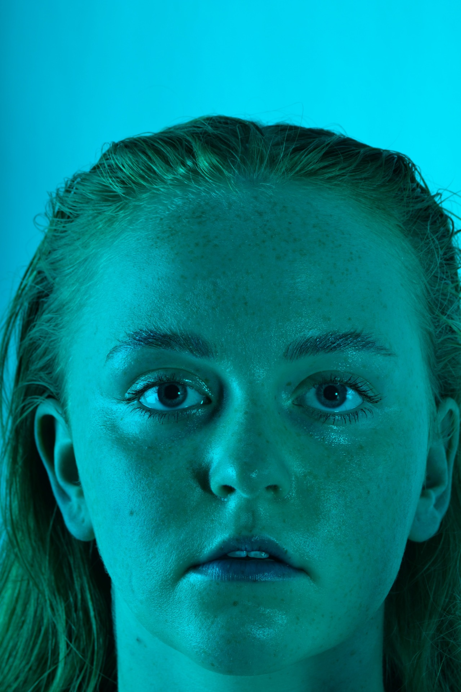
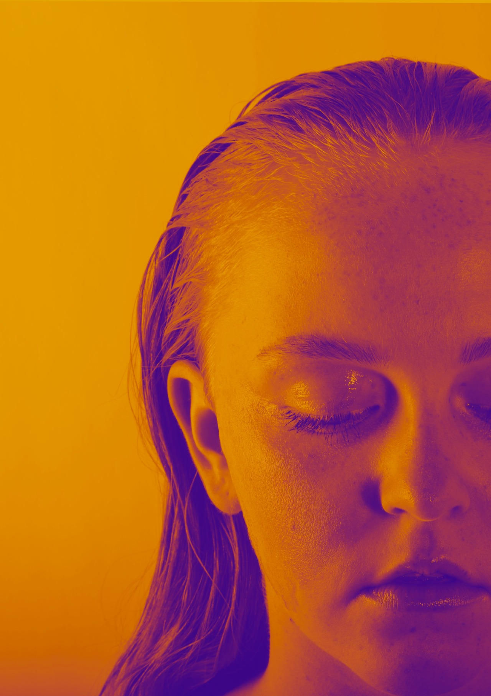
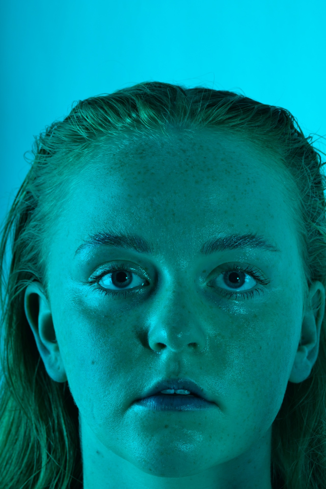
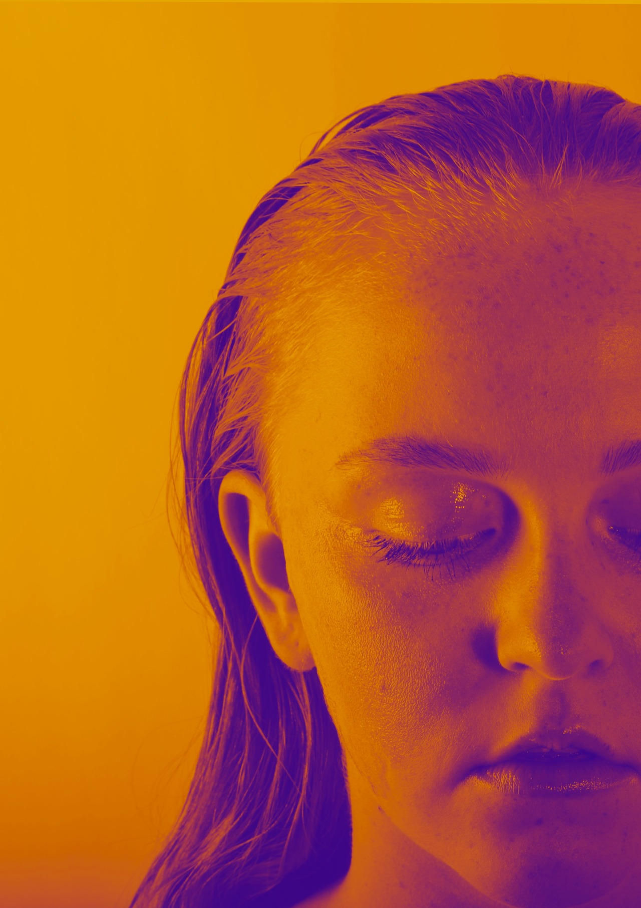
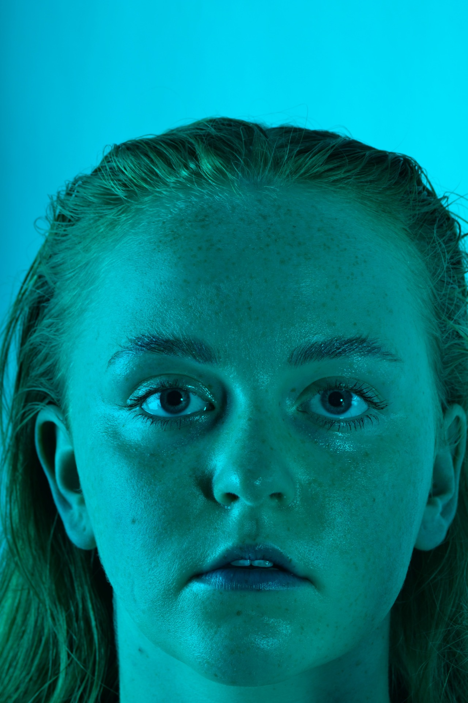
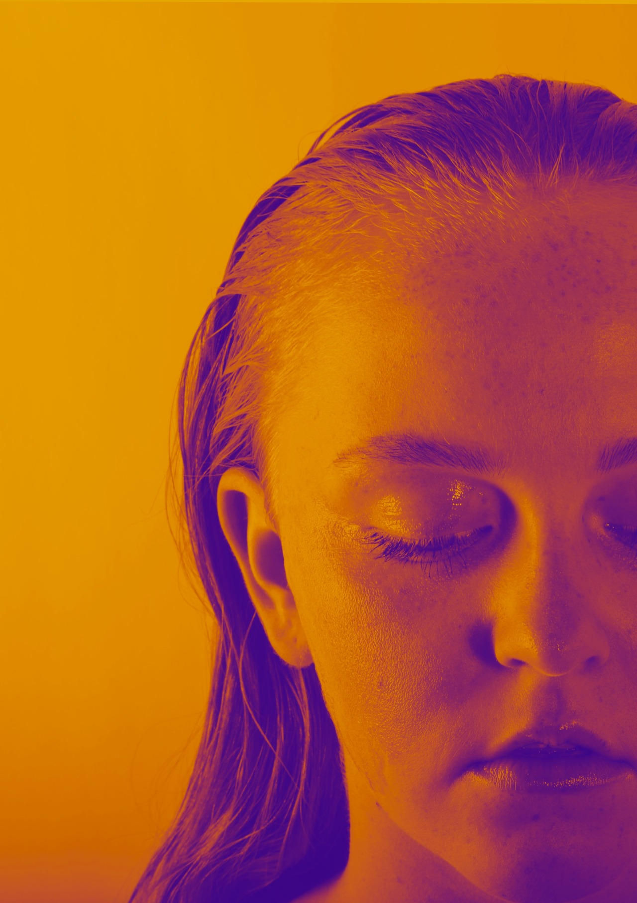
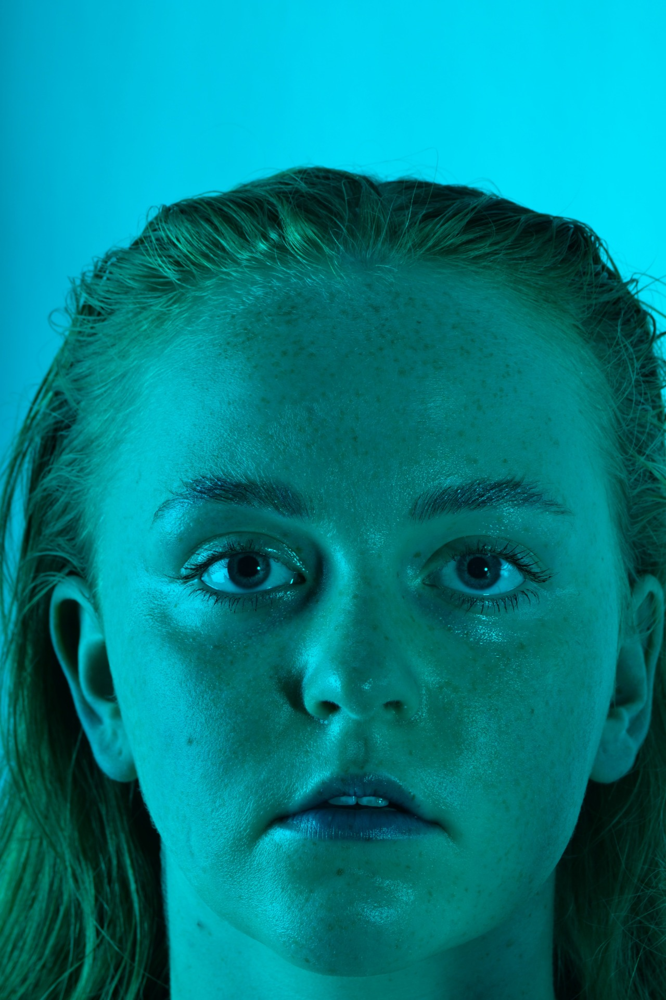
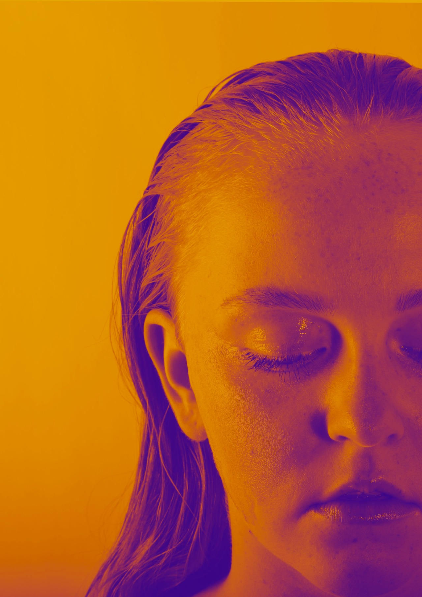

Kabuki was a design project created in 2016.
I was asked to create possible magazine covers for a cosmetic company. I played around a lot with contrast and light reflection. This bought a lot of focus to the skin and minimal makeup used on the model.
Kabuki wanted the make up to be as natural as possible, while using bold colours in unconventional places.
The Fresher Project aimed to capture the life of a Wellington University Student in an authentic way. The shots seemd to capture the transition between child and adult life, with novelties like wine, cigarettes and coffee now consumed without restriction.
My work in Public Relations is new but most of what I enjoy most. It mixes together my passion for design, writing and advocacy, which always results in a project i'm proud of.
The images to the left are posters designed for a campaign on behalf of Massey University to increase the use of student services

During the Massey PR campaign, app design was something I was particularily interested in. The app needed to host all of our messaging in an effective and aesthetic way. I was only apart of designing the app, but would love to learn more about app programming and coding.
I am a 20 year old Communications Student from Hawkes Bay, passionate about Public Relations and Design. This Website is a portfolio of all my past and present works including photography, artwork and public relations campaign work.
To get in contact with me regarding a business enquiry, please contact me on; allyjaxso@gmail.com.